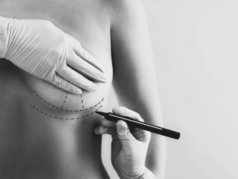

Breast Implants

1895
- Surgeon Vincez Csemy performed the earliest breast augmentation in 1895 by removing a benign lipoma due to
asymmetry from tumor removal.
- Over the next 50 years, implants were made of different materials including but not limited to ivory, wool,
rubber, and more.
1962
- In 1962, American plastic surgeons Thomas Cronin and Frank Gerow created the very first silicone implant
beginning the modern era of breast augmentation.
- The implants went through several transformations over the next few decades.
1990s
- Despite the improvements, the FDA banned silicone implants in the early 1990s due to health complication
concerns.
2006
- Over a decade later in 2006, the FDA deemed saline implants safe and lifted the ban.
2010s
- Ever since then breast implants have been more popular in the United States peaking in the 2010s, with
celebrities like the Kardashians.
2020s
- As of 2023, the trend of breast implants has seen a decrease with breast reduction reigning in popularity.
Within a decade trends for "boob jobs" have gone from one extreme to another. Who knows what the future has to
hold?